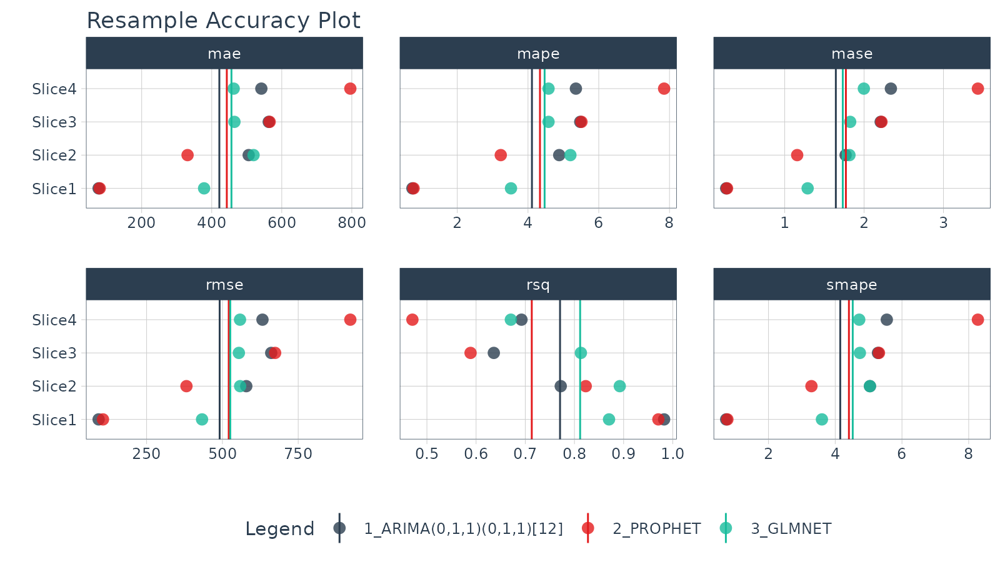

Modeltime Resample provide a convenient toolkit for efficiently evaluating multiple models across time, increasing our confidence in model selections.
-
The core functionality is
modeltime_resample(), which automates the iterative model fitting and prediction procedure. -
A new plotting function
plot_modeltime_resamples()provides a quick way to review model resample accuracy visually. -
A new accuracy function
modeltime_resample_accuracy()provides a flexible way for creating custom accuracy tables using customizable summary functions (e.g. mean, median, sd, min, max).
Single Time Series
Resampling gives us a way to compare multiple models across time.
In this tutorial, we’ll get you up to speed by evaluating multiple models using resampling of a single time series.
Getting Started Setup
Load the following R packages.
library(tidymodels)
library(modeltime)
library(modeltime.resample)
library(tidyverse)
library(timetk)We’ll work with the m750 data set.
m750 %>%
plot_time_series(date, value, .interactive = FALSE)Step 1 - Make a Cross-Validation Training Plan
We’ll use timetk::time_series_cv() to generate 4
time-series resamples.
- Assess is the assessment window:
"2 years" - Initial is the training window:
"5 years" - Skip is the shift between resample sets:
"2 years - Slice Limit is how many resamples to generate:
4
resamples_tscv <- time_series_cv(
data = m750,
assess = "2 years",
initial = "5 years",
skip = "2 years",
slice_limit = 4
)
resamples_tscv## # Time Series Cross Validation Plan
## # A tibble: 4 × 2
## splits id
## <list> <chr>
## 1 <split [60/24]> Slice1
## 2 <split [60/24]> Slice2
## 3 <split [60/24]> Slice3
## 4 <split [60/24]> Slice4Next, visualize the resample strategy to make sure we’re happy with our choices.
# Begin with a Cross Validation Strategy
resamples_tscv %>%
tk_time_series_cv_plan() %>%
plot_time_series_cv_plan(date, value, .facet_ncol = 2, .interactive = FALSE)Step 2 - Make a Modeltime Table
Create models and add them to a Modeltime Table with Modeltime.
I’ve already created 3 models (ARIMA, Prophet, and GLMNET) and saved the
results as part of the modeltime package
m750_models.
m750_models## # Modeltime Table
## # A tibble: 3 × 3
## .model_id .model .model_desc
## <int> <list> <chr>
## 1 1 <workflow> ARIMA(0,1,1)(0,1,1)[12]
## 2 2 <workflow> PROPHET
## 3 3 <workflow> GLMNETStep 3 - Generate Resample Predictions
Generate resample predictions using
modeltime_fit_resamples():
- Use the
m750_models(models) andm750_training_resamples - Internally, each model is refit to each training set of the resamples
- A column is added to the Modeltime Table:
.resample_resultscontains the resample predictions
resamples_fitted <- m750_models %>%
modeltime_fit_resamples(
resamples = resamples_tscv,
control = control_resamples(verbose = FALSE)
)
resamples_fitted## # Modeltime Table
## # A tibble: 3 × 4
## .model_id .model .model_desc .resample_results
## <int> <list> <chr> <list>
## 1 1 <workflow> ARIMA(0,1,1)(0,1,1)[12] <rsmp[+]>
## 2 2 <workflow> PROPHET <rsmp[+]>
## 3 3 <workflow> GLMNET <rsmp[+]>Step 4 - Evaluate the Results
Accuracy Plot
Visualize the model resample accuracy using
plot_modeltime_resamples(). Some observations:
- Overall: The ARIMA has the best overall performance, but it’s not always the best.
- Slice 4: We can see that Slice 4 seems to be giving the models the most issue. The GLMNET model is relatively robust to Slice 4. Prophet gets thrown for a loop.
resamples_fitted %>%
plot_modeltime_resamples(
.point_size = 3,
.point_alpha = 0.8,
.interactive = FALSE
)
Accuracy Table
We can compare the overall modeling approaches by evaluating the
results with modeltime_resample_accuracy(). The default is
to report the average summary_fns = mean, but this can be
changed to any summary function or a list containing multiple summary
functions (e.g. summary_fns = list(mean = mean, sd = sd)).
From the table below, ARIMA has a 6% lower RMSE, indicating it’s the
best choice for consistent performance on this dataset.
resamples_fitted %>%
modeltime_resample_accuracy(summary_fns = mean) %>%
table_modeltime_accuracy(.interactive = FALSE)| Accuracy Table | |||||||||
| .model_id | .model_desc | .type | n | mae | mape | mase | smape | rmse | rsq |
|---|---|---|---|---|---|---|---|---|---|
| 1 | ARIMA(0,1,1)(0,1,1)[12] | Resamples | 4 | 421.78 | 4.11 | 1.64 | 4.15 | 490.88 | 0.77 |
| 2 | PROPHET | Resamples | 4 | 443.09 | 4.34 | 1.77 | 4.41 | 520.80 | 0.71 |
| 3 | GLMNET | Resamples | 4 | 456.33 | 4.47 | 1.73 | 4.52 | 525.89 | 0.81 |
Wrapup
Resampling gives us a way to compare multiple models across time. In this example, we can see that the ARIMA model performs better than the Prophet and GLMNET models with a lower RMSE. This won’t always be the case (every time series is different).
This is a quick overview of Getting Started with Modeltime Resample. To learn how to tune, ensemble, and work with multiple groups of Time Series, take my High-Performance Time Series Course.